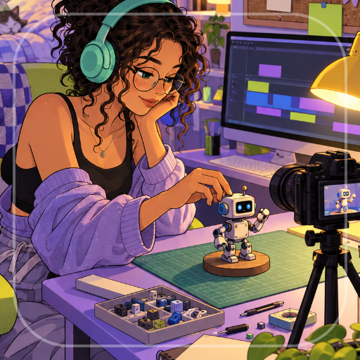

<- all projects

Upload
PC
Volume
Live
Film, edit and grow a video channel while building a life beyond the views.
Start with a borrowed camera, a bedroom desk and a promise to publish one honest video a week. Plan each video, catch the right shots in a timing mini-game, cut the opening, detail and payoff together and decide how to pay for it. Over 50 weeks and 5 story chapters, pick one of 6 niches and 3 formats, weigh sponsor deals against your audience's trust and balance energy, trust and friendship. Upgrade your camera, editing desk and studio room, replay any week for better stars and grow a fictional channel into your own studio without losing your friends or your voice.